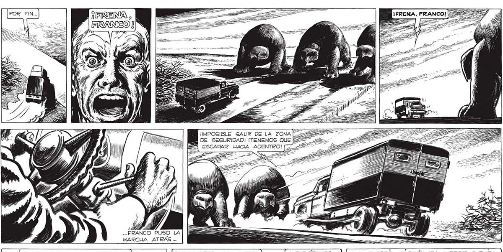
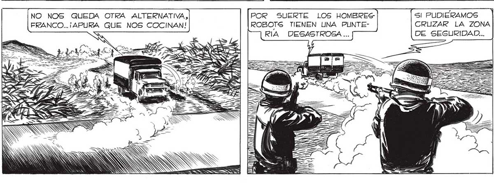

POR FIN... 343 (O = SAS = > SI ES > 2) _ > ORO ¡IMPOSIBLE SALIR DE LA ZONA AA 2 DE SEGURIDAD! ¡TENEMOS QUE E 5 ESCAPAR HACIA ADENTRO! [74% as MD A y .. FRANCO PUSO LA | [ ¿_óáAAAAAAAS a ba . ÁS MARCHA ATRAS ... === A O QUIÉN IBA A DECIR QUE IBA4MOS A DESEAR ESTAR OTRA VEZ EN MEDIO DE LA NEVADA. Y SALIR POR ALGÚN OTRO NO NOS QUEDA OTRA ALTERNATIVA, POR SUERTE LOS HOMBRES- SI PUDIERAMOS FRANCO... ¡APURA QUE NOS COCINAN! ROBOTS TIENEN UNA PUNTE- CRUZAR LA ZONA RIA DESASTROSA ... DE SEGURIDAD... IN KA) e ÁN | We AOS

